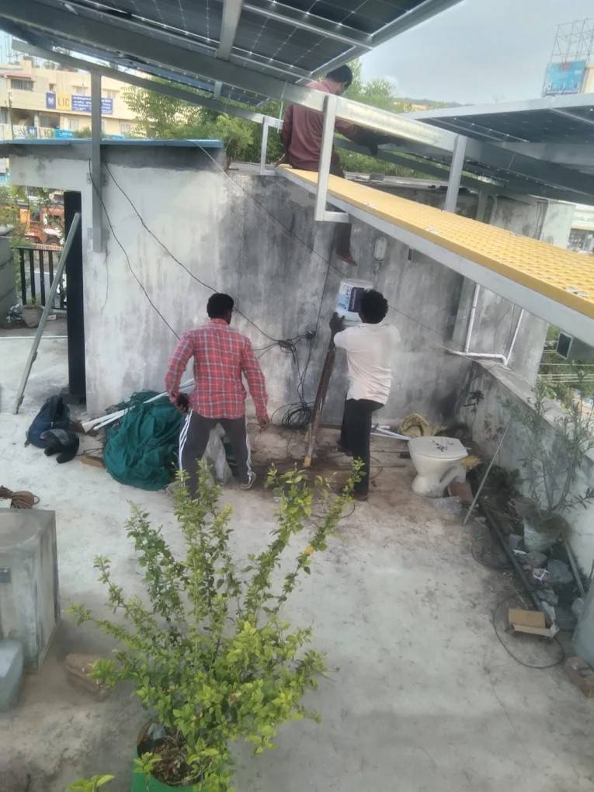

01
The solid slab
The concrete around the stair wall is the only place we draw a row.
Padi · written price
The amount you pay leaves the air path to the stair wall clear. If you already own the panels and inverter, fitting starts at ₹3,000 per kW. A complete plant is priced after a free visit from Madipakkam.

The drop on the stair wall
Where the service drop lands on the stair-head wall in the middle, the air path to that wall stays clear. Modules are not laid under it. The hook is not moved. The tank stays. A walkway stays. The row is priced on the solid slab around that wall. A house where the drop stays off that wall is an ordinary survey. The roof itself is on panels for a Padi home. What a panel rate leaves out is on solar panel prices in Padi.
Labour from ₹3,000 per kW covers civil work, mounting, wiring, testing, and commissioning when the modules and inverter are already yours. Cables and structure steel stay outside that rate. The scope is on installation services.
Labour from ₹3,000/kWSubsidy up to ₹78,000Visit from MadipakkamWhat moves a Padi quote
The concrete around the stair wall is the only place we draw a row.
That path stays clear. Modules are not laid under the drop, and the hook is not moved.
On the solid slab, the tank stays and a path stays. The row uses what remains.
Eligible homeowners can receive up to ₹78,000 with DCR modules and an approved file. Amount and approval follow current scheme rules. Compare the price after that assistance.
How to read the sheet
Ask whether the air path to the stair wall was left clear, DCR or NDCR, what is excluded, and who files the net meter and the subsidy. Houses where that air path must stay clear are the usual fit, when the terrace is in that household's name. A flat in a large block cannot claim the common roof.
How any Chennai quote should be lined up is on panel and price. NDCR against DCR is in that guide. A parapet cable is the Gopalapuram price.
Questions, answered
Fitting starts at ₹3,000 per kW when you already own the panels and inverter. A complete plant is written after a free visit, on the slab around a service drop on the stair wall. Eligible homes can receive up to ₹78,000. Amount and approval follow current scheme rules.
No. The air path to the stair wall stays clear. The hook is not moved.
No. A house where the drop stays off that wall is a normal survey. The tank stays, and a walkway stays.
DCR modules keep the path to up to ₹78,000 open. A cheaper NDCR module can cost more once that assistance is given up. Ask who files the papers.
A free visit from Madipakkam. We mark the stair-wall drop before any module is ordered.
Request your free quote →